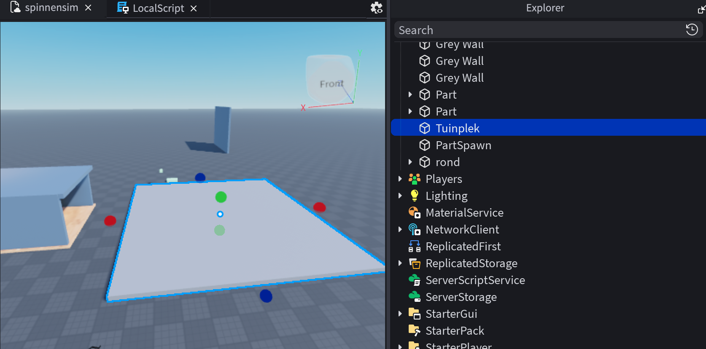

Spinnenheld – VR Experience
Probleem
Veel kinderen ontwikkelen angst voor spinnen door onbekendheid en negatieve associaties. Deze angst kan leiden tot vermijding, terwijl spinnen meestal ongevaarlijk zijn. Traditionele manieren zoals uitleg werken vaak niet goed. De uitdaging was om kinderen op een veilige en speelse manier te helpen hun angst te verminderen.
Mijn rol
Ik werkte in een duo en was verantwoordelijk voor onderzoek, conceptontwikkeling en de gebruikerservaring. Ik ontwikkelde een persona, stelde ontwerpvoorwaarden op en ontwierp de flow van de experience. Daarnaast werkte ik het prototype uit in Roblox en hield ik me bezig met de visuele stijl en interactie.

Vanuit mijn onderzoek heb ik ontwerpvoorwaarden opgesteld.
Aanpak
Ik deed onderzoek naar angst bij kinderen en exposure therapy. Hieruit bleek dat angst het beste vermindert door stapsgewijze blootstelling in een veilige omgeving.
Op basis hiervan ontwikkelden we meerdere concepten, waarna we kozen voor een VR-ervaring. Tijdens het proces heb ik ontwerpkeuzes onderbouwd met UX-principes zoals feedback, controle en duidelijke interactie. Door iteraties en tests hebben we het concept steeds verbeterd.

Voor de kleuren en sfeer heb ik vrolijke kleuren gekozen passend bij een kinder thema.

Dit was een deel van de flowchart in Figma om structuur te krijgen binnen het maken van de dialoog tussen het kind en de spin.

Hier was ik bezig met een onderdeel in Roblox Studio. Het prototype is gebouwd in Roblox Studio, waarin ik de gebruikerservaring en flow van de VR-ervaring heb uitgewerkt. In Roblox heb ik scripts geschreven met Lua.
Oplossing
We ontwikkelden “Spinnenheld”: een VR-ervaring waarin kinderen stap voor stap wennen aan spinnen.
De experience begint speels en veilig met een kleine, vriendelijke spin. Naarmate de ervaring vordert, wordt de spin realistischer. Gebruikers maken zelf keuzes, zoals interactie aangaan of afstand houden, en zien direct het effect van hun gedrag.
De ervaring eindigt met een moment waarin het kind de spin helpt, waardoor angst wordt omgezet in controle en zelfvertrouwen.


Resultaat & reflectie
De ervaring maakt angst bespreekbaar en helpt kinderen op een laagdrempelige manier wennen aan spinnen. Door interactie en storytelling voelt het als een spel in plaats van therapie.
Voor mij was dit een waardevol project waarin ik leerde hoe je gedrag en emoties kunt beïnvloeden met design. Ik heb onderzoek vertaald naar een concrete experience en gewerkt met XR en interactie.


video OXR.mp4